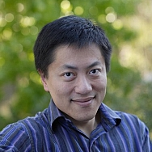

DataEd 2024 Program
We're excited to share our full program with you. Please come to room Europa to join us!
| Time | Program | Presenter and Title | Materials (will be added later) |
| 8:30 AM | Walk-in | ||
| 8:45 AM | Opening | ||
| 9:00 AM | Paper session 1 | Chiemi Watanabe - Designing a Self-Regulated and Constructive Database Course for Deaf and Hard-of-Hearing Students | |
| 9:20 AM | Matías López - ERDoc: A Web Interface for Entity-Relation Modelling | ||
| 9:40 AM | Michael Liut - Exploring Self-Explanations in a Flipped Database Course | ||
| 10:00 AM | Coffee Break | ||
| 10:30 AM | Paper session 2 | Arnab Nandi - Integrating LLMs into Database Systems Education | |
| 10:50 | Daphne Miedema - A Feasibility Study on Automated SQL Exercise Generation with ChatGPT-3.5 | ||
| 11:10 PM | Discussion | Guided community discussion on LLMs in Data Systems Education | |
| 12:30 PM | Lunch break | ||
| 2:00 PM | Keynote and discussion | Jun Yang - What Teaching Databases Taught me about Researching Databases | |
| 3:15 PM | Closing | ||
| 3:30 PM | Coffee |
Keynotes
We're very happy to announce to you our keynote speaker for this year: Jun Yang. Read more about his talk below!
Jun Yang
What Teaching Databases Taught me about Researching Databases.Declarative querying is a cornerstone of the success and longevity of database systems, yet it is challenging for novice learners accustomed to different coding paradigms. The transition is further hampered by a lack of query debugging tools compared to the plethora available for programming languages. The paper samples several systems that we build at Duke University to help students learn and debug database queries. These systems have not only helped scale up teaching and improve learning, but also inspired interesting research on databases. Furthermore, with the rise of generative AI, we argue that there is a heightened need for skills in scrutinizing and debugging AI-generated queries, and we outline several ongoing and future work directions aimed at addressing this challenge.
Bio: Jun Yang is currently the Bishop-MacDermott Family Professor of Computer Science at Duke University. He joined Duke after receiving his Ph.D. from Stanford in 2001 and chaired the Department of Computer Science at Duke during 2020-2023. He has broad research interests in databases and data-intensive systems. He is a Trustee of the VLDB Endowment and served as the general co-chair of SIGMOD 2017 and the co-Editor-in-Chief of PVLDB during 2022-2023. He is a recipient of the CAREER Award, IBM Faculty Award, HP Labs Innovation Research Award, and Google Faculty Research Award. He has striven to connect research to his other passions, such as journalism, where he has worked on computational fact-checking since its nascent days, and education, where he has built a number of software tools for learning databases. He received the David and Janet Vaughan Brooks Teaching Award at Duke.